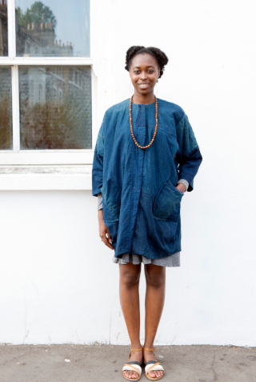
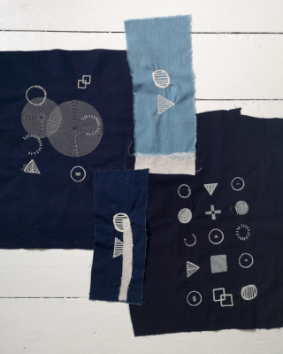
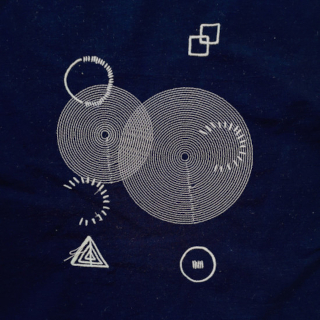
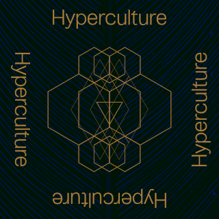
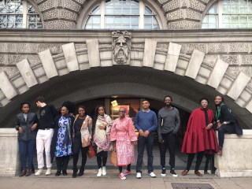
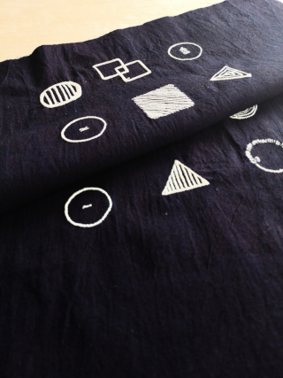
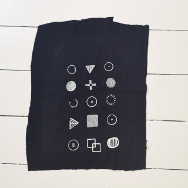
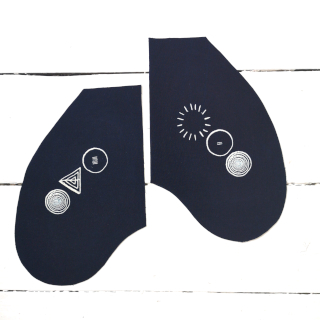
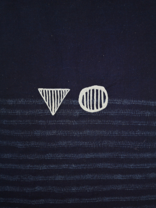
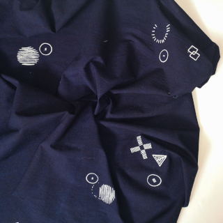

Humans

Yegwa Ukpo
Self Portrait
Yegwa Ukpo is the founder and Head Maintainer at Newtype, a maintenance practice focused on wisdom ecologies of food, shelter, clothing and being; exploring the use of play, playgrounds, storytelling and other indigenous technologies as tools for worldbuilding and the crafting of possible futures.
Yemi Awosile

Portrait by Akemi Kurosaka
Yemi Awosile is a designer living and working in London. Her work is
informed by cultural insights expressed primarily through textiles and
printed matter. The broader scope of her practice bridges design and
visual arts through social interventions. Recent projects include
collaborations with Tent Rotterdam, Tate Gallery, Contemporary And (C&)
magazine and the British Council. She trained as a textile designer at
the Royal College of Art and Chelsea College of Art. She is an Associate
Lecturer at Goldsmith, University of London teaching BA Design, Studio
Practice. She is a member of the Stanley Picker Gallery & Dorich House
Museum Advisory Group. Her investigation into materials can be seen in
the V&A Museum textiles handling collection.
Glossary

Hyperculture Glossary
Concept Overview

Please click to download presentation (PDF Format)
Year Garments
One of the signature garments produced by Hyperculture, a year garment can take a variety of forms. What makes any garment a year garment is whether or not it is marked using hypermarks and treated as an object being taken care of for future custodians.
This means that any item of clothing can be called a year garment, and not just clothes designed specifically to be one.
In this way, the year garment is not designed, but is something created out of a practice of marking.
Year garments are not treated as disposable, but are either traded, handed down or upcycled - their messages and stories added to whatever new garment is made from their remains.
Eventually, we will build a digital repository for custodians to track the ownership of, and the records stored on, these garments in order to facilitate their persistence and transmission into the future.
Hypermarks


Hypermarks Codex (PDF file - Created by Yemi Awosile)
Primer


Hyperculture is a philosophy and community built around an approach to making, taking care of and handling garments and other objects throughout their life and end of life.
Inspired by the fact that in a lot of indigenous cultures, objects were considered to be entities in their own right. With the spirit of the maker said to imbued into exemplary ones. Objects were entangled with the lives of their owners and the times they existed in. Even today, items belonging to certain personalities or that lived through particular eras are especially prized. Existing simultaneously as singular items with souls and as hyper-objects in the sense of hyper-text; relating to other objects and other hyper-objects, like their owners, former custodians, cultures and the maker traditions that informed their creation.
Projects

The Life of Objects
The Life of Objects exhibition was put together by Newtype Studios in collaboration with Yemi Awosile with support from the British Council and Ellen MacArthur Foundation as part of their Circular Design Lab 2019 programme held in November 2019.
The 2019 cohort was comprised of a selection of design practitioners from all over the African continent and focused on how to propagate circular design and economic principles in various countries and sectors throughout Africa.

From L-R: Naa Obeye, Ghana; Matthew Edwards, South Africa; Betty Bulongo, Zambia; Vanessa Nsona, Malawi; Wacy Zacarias, Mozambique; Isatu Harrison, Sierra Leone; Kishan Goochoorum, Mauritius; Yegwa Ukpo, Nigeria; Maxwell Mutanda, Zimbabwe; Mamy Tall, Senegal
The exhibition is comprised of a design proposal we are calling the Year Garment, which is a type of garment originally conceived as a cultural artifact that was part of a speculative fiction project that is being developed by Newtype Studios.


Illustrations by Philip Fagbeyiro
Developed further under the Hyperculture project, it is imagined as not only an item of clothing, but also as a medium for the recording, transmitting and encoding experiences and knowledge.
The second component is a short narrative following the lives of three generations in a family through the perspective of a particular Year Garment that is handed down.
“An abstract journey through the symbols etched into the fabric of a year garment over three generations of a family. A gift is given, graduation, a first job, love, childbirth, death, mourning, healing, growth and gifting again."
As part of the exhibition, Yemi also created a series of textiles showcasing the various hypermarks created for the Hyperculture project.
The hypermarks language is made up of a series of ideograms each one symbolising a certain type of event, emotion or relationship. They work on their own and can be used in conjunction with one another in order to create new meanings.





For a more comprehensive overview of the Hyperculture project, please check out our Glossary.
Event Schedule
| Item |
Date & Time |
| Instagram Live talk with Yegwa and Yemi |
16th September 2020, 6pm WAT/BST |